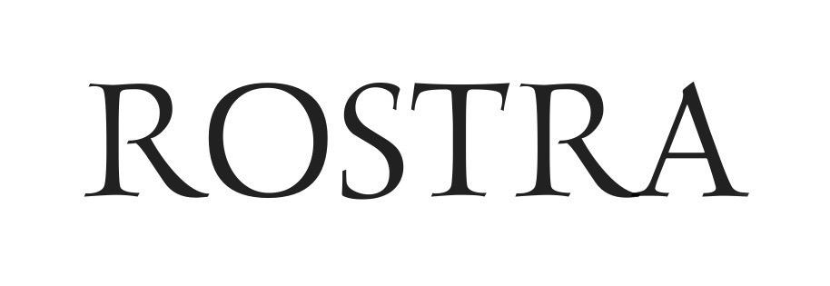

About us
Lulu Cheng Meservey, Sergey
Alexashenko and Toya Holness help founders go direct with their
comms.
Here are some nice things people have said about us:
- Ilya Sutskever: "Unprecedented communication"
- Palmer Luckey: "Lulu was instrumental in putting Anduril on the map and I couldn't imagine our
trajectory without her help."
- Sam Altman: "Lulu is one of the few people who actually understands how communication works in the
current world. This alone would be extremely valuable, but she also has a deeply strategic lens, courage,
excellent instincts on when to do what, and a very clear style."
- Brian Armstrong: "Going Direct is the right strategy for comms in today's world. And Lulu basically
created the movement."
- Nat Friedman: "Lulu's work is a masterclass. She's simply the best in the world."
- Scott Wu: "Rostra is the best in the business. They've worked with us from before the Devin launch
and has been deeply helpful every step of the way."
- Mikey Shulman: "A+. 3 Sigma above the mean."
- David Holz: "Whenever I need comms advice I go to Lulu, she's the best!"
We are currently looking to hire one exceptional person. Read more here.
For everything else - email us.

Homepage